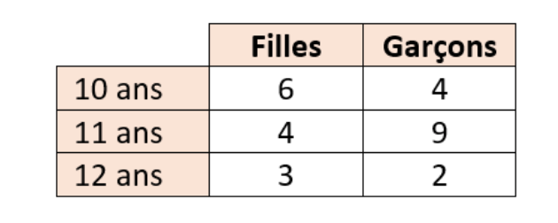
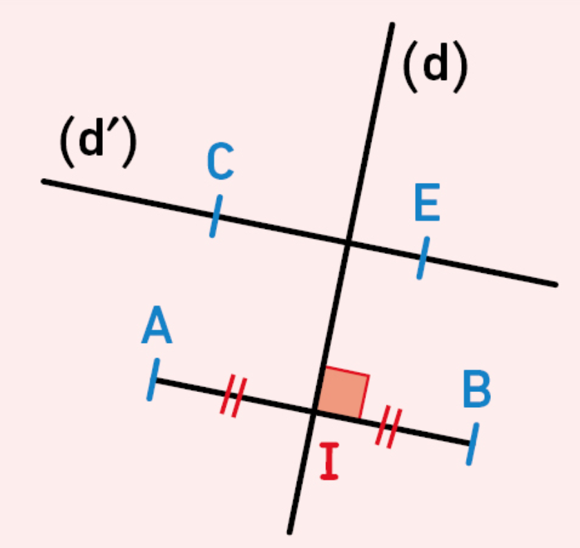

On considère le nombre : 23 , 456 |
|
Partie entière = |
Partie décimale = |
Fraction décimale :
|
Décomposition : |
Le chiffre des … ► dixièmes = |
Le nombre de … ► dixièmes = |
C  □ les élèves les plus nombreux ont onze ans. □ 10 élèves ont 10 ans. □ Il y a autant de filles de 11 ans que de garçons de 10 ans □ Il y a autant de filles que de garçons. |
|
O  Compléter les phrases suivantes : a. Le point I est le ………………………..… du segment [AB]. b. La droite (d) est …………………….……. au segment [AB]. c. La droite (d) est la …………………..... du segment [AB]. d. La droite (AB) est ………………. à la droite (CE).
|
|